Features
依「新生最有感」的順序排列。圖片可左右滑動查看。
期中考週、棄選截止日、補假日直接顯示在行事曆上，不用自己翻教務處公告。
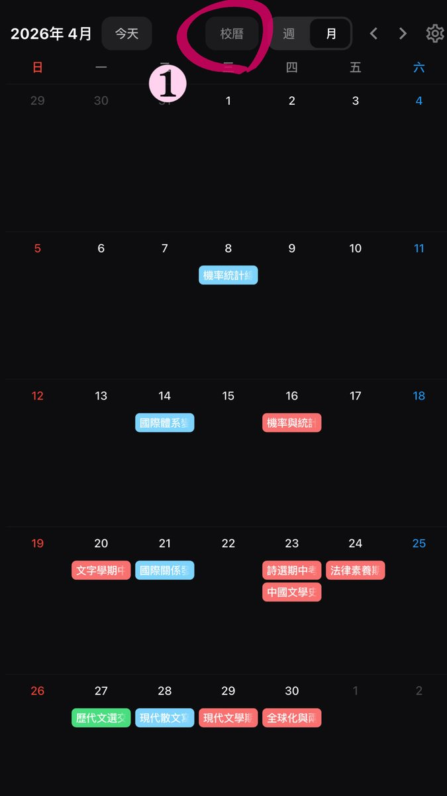
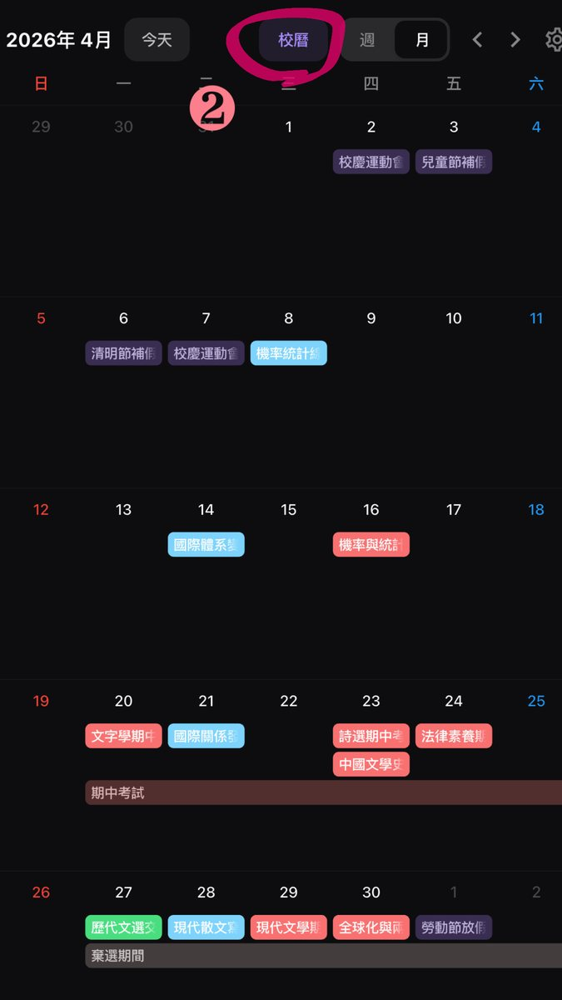
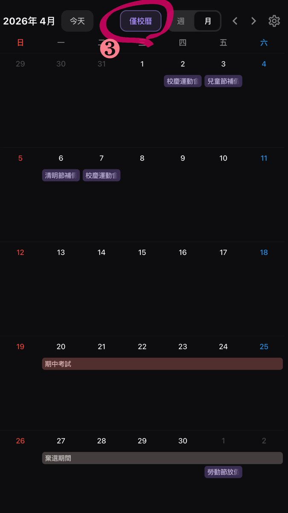
← 左右滑動看 3 張 →
輸入每科成績、選好課程類別之後，整體績點、主修績點、百分制平均與歷學期趨勢都會自動算出來。
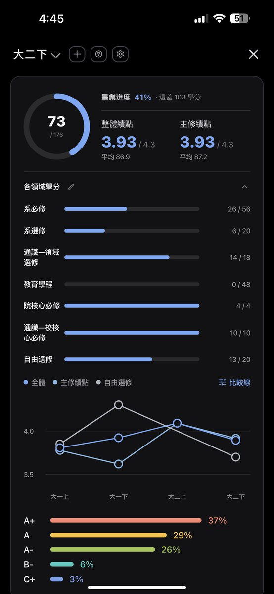
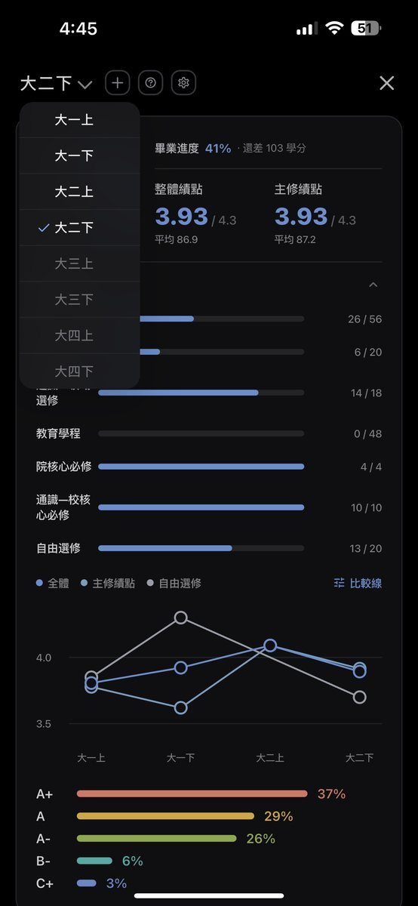
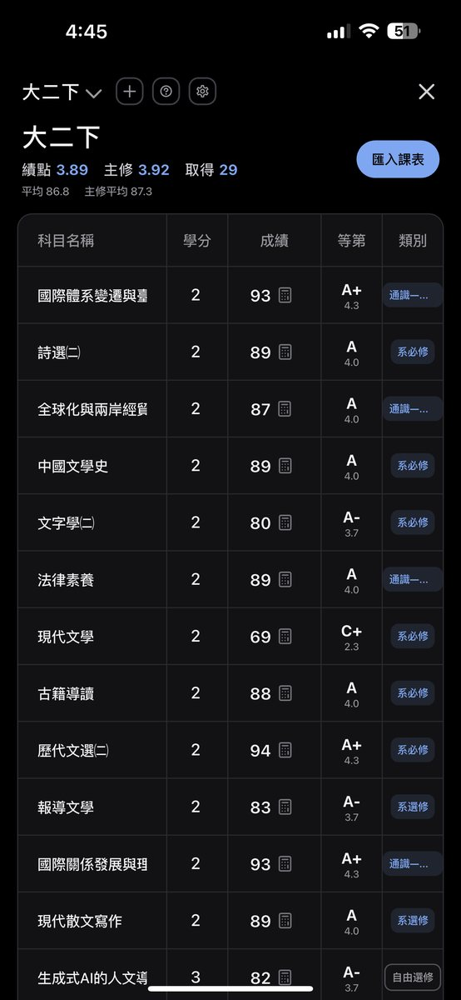
← 左右滑動看 3 張 →
開啟即時動態後，不用打開 app，鎖定畫面和動態島就顯示今日課程與待辦。
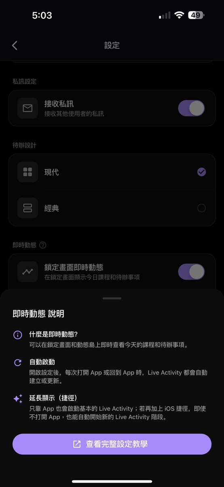
從主頁下方中間的日曆按鍵進入課表。第一次使用要先建立一份課表，後續功能才會開放。
右上角三個按鍵（從紫色「＋」往左數，含「＋」本身）：
好友與分享：
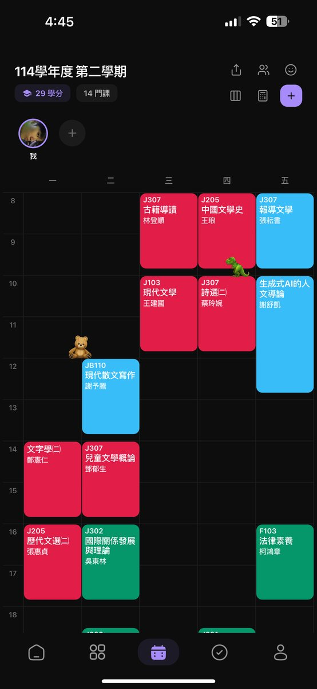
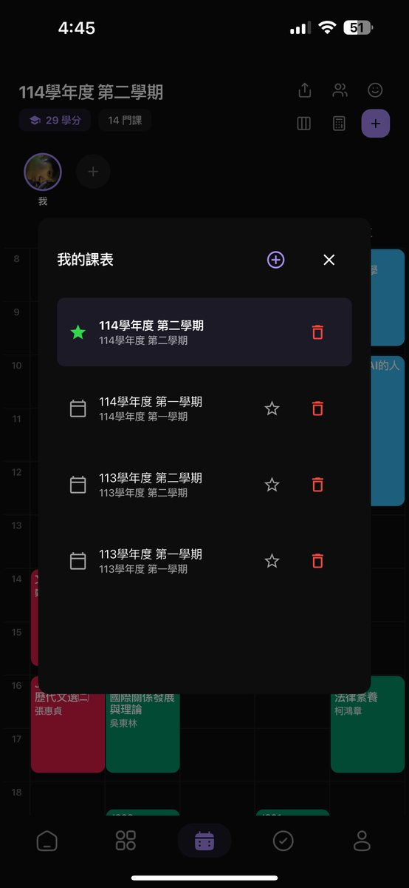
← 左右滑動看 2 張 →
設定開學日與週數後，系統自動算出每一堂的上課日期，逐堂點記錄就好。
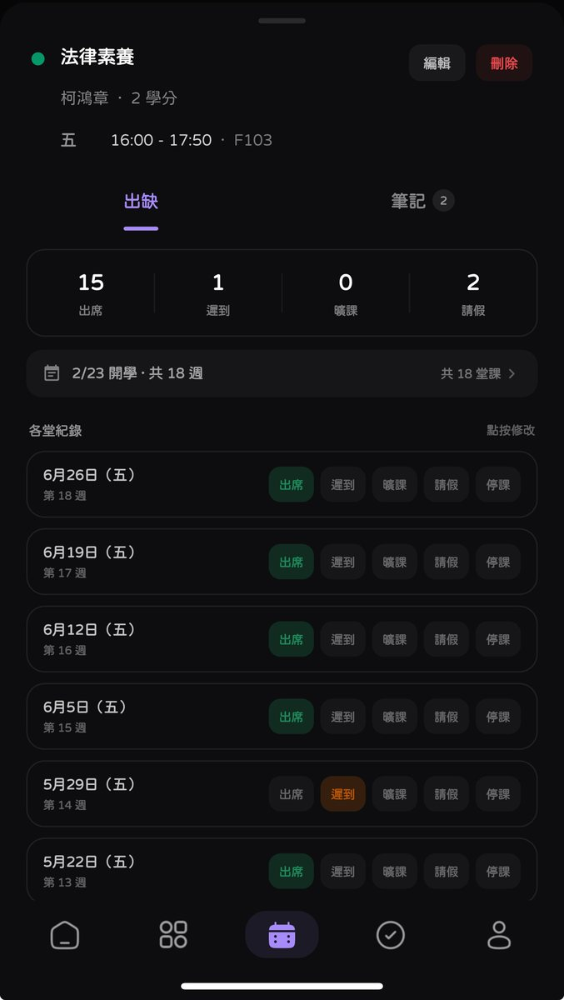
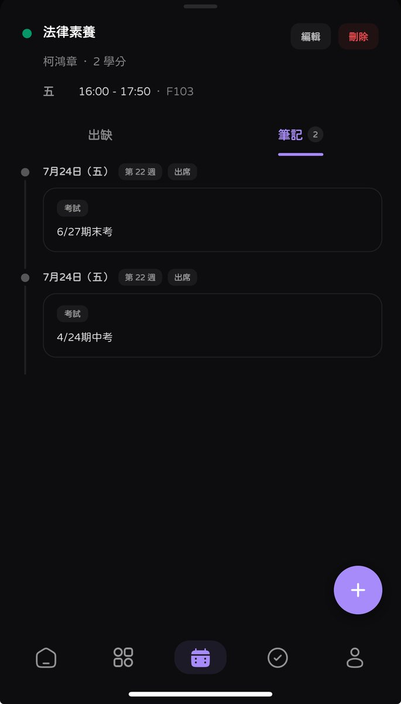
← 左右滑動看 2 張 →
Getting started
建課表是最花時間的一步，先有心理準備。
可以直接用學校信箱註冊，也可以先用自己的信箱註冊、之後再驗證學生身分。
主頁下方中間的日曆按鍵 → 右上角「＋」逐門輸入課名、時間、學分、教室、老師。一整個學期大約要 10–15 分鐘，建議一次做完。建好之後加好友、分享連結等功能才會開放。
💡 大二以上的省時做法：如果你只是想補回過去學期的資料來算 GPA 和畢業學分，建立時可以把時間設為未定，只填課名和學分數就好。這樣能快速把歷年課程灌進 GPA 與學分計算系統，不用把每一堂的時間、教室都補齊。
設定 → 即時動態 → 打開開關。之後每天不用打開 app 就看得到今天的課。
點進任一門課設定開學日，系統會自動算出 18 週的上課日期，出缺席就能開始記。
Advanced · iOS
只用 App 就會有基本的即時動態。想讓它一整天都在，加一個捷徑自動化即可——這是進階選項，不做也不影響基本使用。
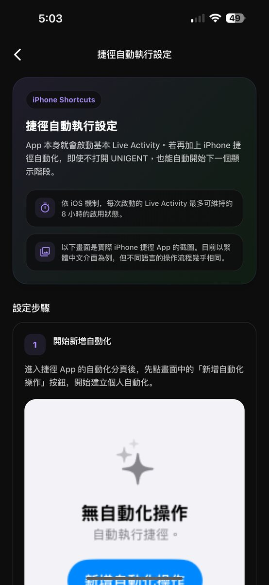
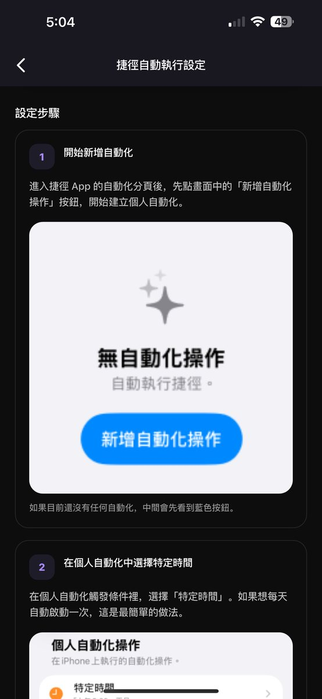
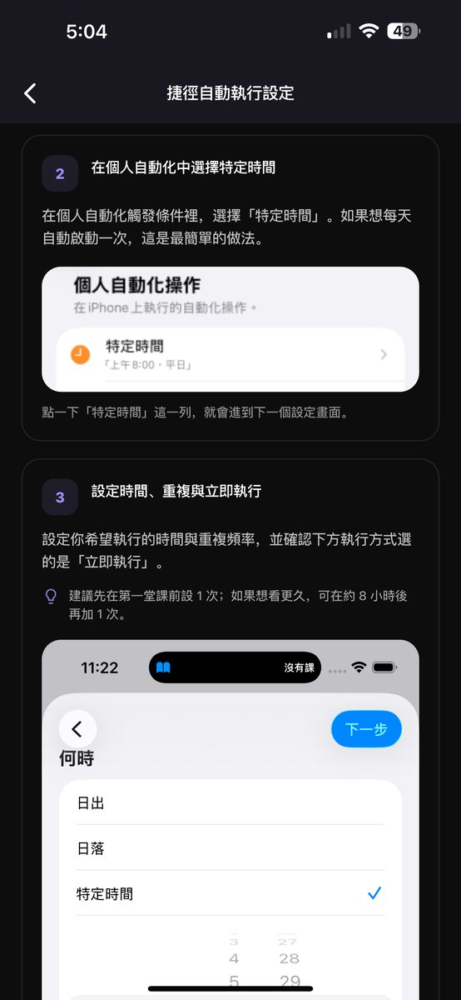
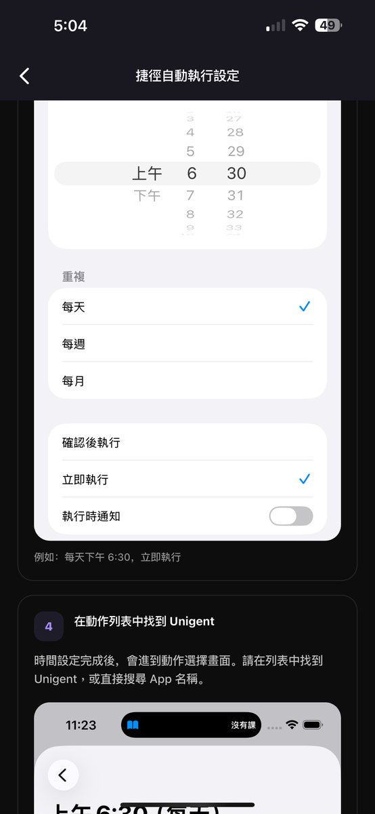
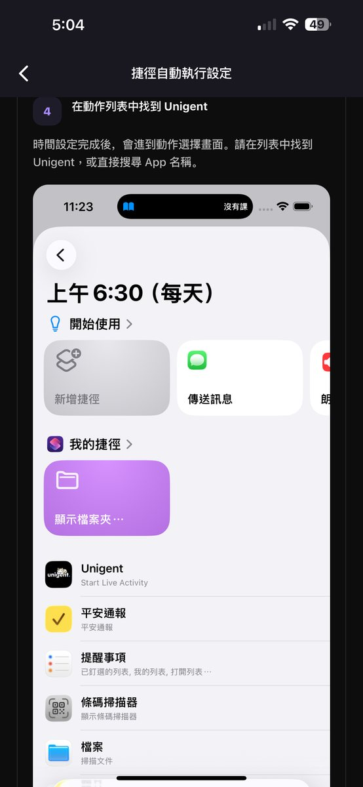
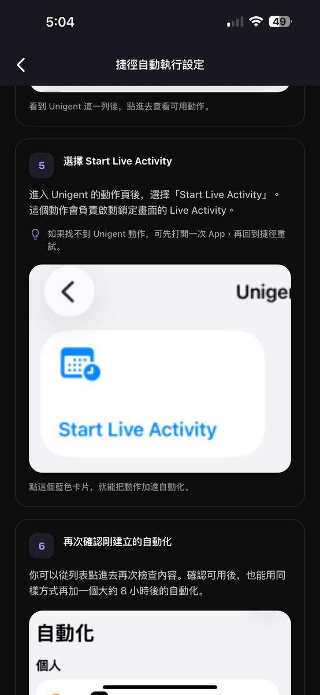
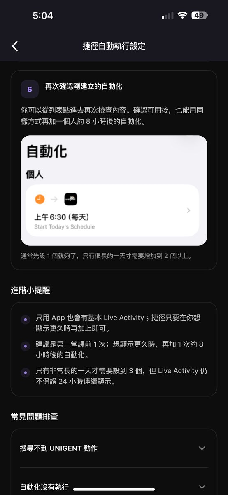
← 左右滑動看 7 張完整步驟 →
FAQ
不一定。目前有兩種方式：
第二種的好處是畢業後學校信箱停用了，帳號還在，不會因為信箱失效就登不進去。
⚠️ 早期版本有些剛升大學的同學用「准考證號」註冊，後來需要改成學校信箱。開發者已知悉並已排定修正，但截至本頁更新時間尚未上線。如果你現在正好遇到這個問題，可以先聯絡官方客服 support@unigent.tw 協助處理。
目前已有 150 所以上的大專校院有同學在使用，涵蓋國立、私立、科技大學、專科學校，另有部分香港的學校。你可以在下面搜尋看看：
找不到你的學校？可以先下載看看，App 內的學校清單會持續更新。
老實說，看你要解決哪個問題——沒有哪一個是唯一正解。
| 面向 | Unigent | 不揪 |
|---|---|---|
| 課表建立 | ✅ 手動輸入 | ✅ 核心功能 |
| 找共同空堂 | 🔸 可看對方課表，不自動疊算 | ✅ 唯一核心，多人一眼看 |
| GPA／畢業進度 | ✅ 分領域計算 | ❌ |
| 鎖定畫面即時動態 | ✅ | ❌ |
| 校內看板／跨校廣場 | ✅ | 基礎佈告欄 |
| 課程評價 | ❌ 目前沒有 | ❌ |
Unigent 目前的限制我也講清楚：課表要手動建、課程類別要自己設、廣場活躍度因學校而異、課程評價功能目前沒有、Android 更新略晚於 iOS。
需要這些資料主要是為了確認在校生身分——阻擋校外人士、防止同一人重複註冊。條款明訂禁止盜用他人學校信箱、學生證或在學證明。
依官方隱私權政策，幾個你該知道的重點：
⚠️ 這幾點請自己衡量，我不會替你判斷：
完整條款請以官方版本為準——我只是整理重點，不構成任何保證。有疑問可寄 contact@unigent.tw 或 support@unigent.tw。
About the developer
下面是開發者自己在社群上說過的話，我摘了跟 Unigent 有關的部分。
「我是曾經在東吳大學短暫念過書的韓國人。因為和東吳、政大的朋友們一起，想做一個能讓大學生校園生活更方便一點的 App，所以就把它做出來了。」
「這是東吳大學、政治大學、漢陽大學、亞洲大學（韓國）的學生們一起發想、開發的 App。透過學校信箱驗證，只有同校的人才能聊，對其他學校完全不公開。」
「『我真的做得到嗎？』每天都帶著懷疑，和台灣的朋友們一起討論怎麼把 App 做得更好……收到大家說『很開心能用到這個 App』的訊息，真的覺得自己好像擁有了全世界。」
「在成為大學生們必備 App 的那一天到來之前，我會盡全力和大家溝通、持續改善。」
目前也在做 Product Manager 實習，並希望之後能在台灣創業，做一個連結韓國與台灣的 App。